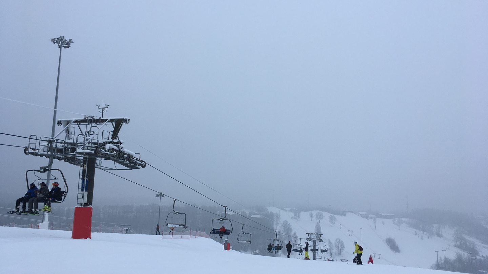

Горнолыжный клуб
Клуб Леонида Тягачёва (Шуколово)
12 трасс8 подъёмниковперепад до 96 мучебные склоны
В Шуколове есть учебные склоны для первых спусков с инструктором и крутые трассы длиной до 600 м для опытных лыжников и сноубордистов. Для вечернего катания на склонах работает освещение.
Как добраться: около 39 км от МКАД по Дмитровскому шоссе. Через Деденево можно проехать по указателям клуба.
Если едете со стороны Яхромы, перед катанием можно взять комплект в прокате ZSKI в Яхроме рядом с СНТ Каменка.